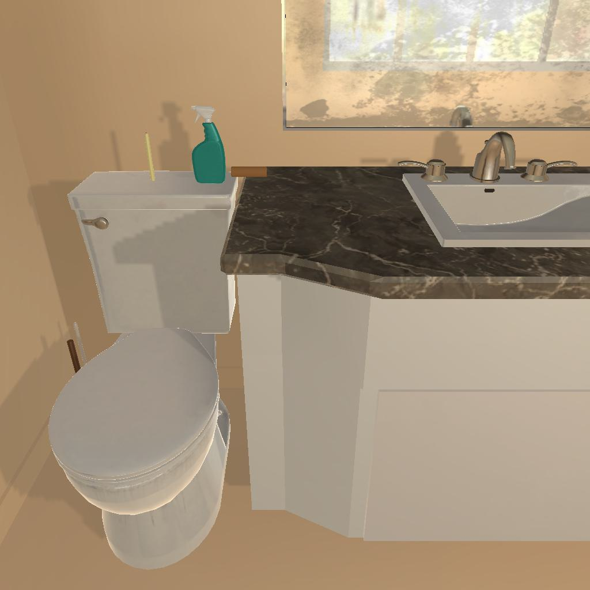

---------------------------------------------------------task: 11---------------------------------------------------------
--------------------------------------------------------------------------------------------------------------------------------------------------------------------
--------------------------------------------------------------------------------------------------------------------------------------------------------------------
Step:--------------------------------------------------------------------------3-------------------------------------------------------------------------------
----------------------------------------
VLM Prompt:
Image1:
Image2:
Image3:
**Instruction**
1. Analyze the provided images to identify all visible household objects and compare the difference between images (e.h. whether the object is opened or not and taken on hand or not), focusing on those relevant to the task description "put a clean soapbar in bathtubbasin."
2. Use the analysis of images and the task hint "The agent must find an object of the desired type, pick it up, go to a sink or a basin, clean the object with a sink or basin, and then find the correct location to place it and put it down there. The agent does not need to use soap bottle or faucet to clean the object, and the agent just needs to do action that is "clean the object with the sink or sink basin"." to answer the question: what is the most reasonable action in the choices for the task description "put a clean soapbar in bathtubbasin"?
3. Decide and write the answer using the template: The answer is: (i): , where i is the real number. If there is no desired object in images, search every place based on **Initial Observation** to find the object. And if no one is exactly correct, choose a similar answer.
**Initial Observation**
You are in the middle of a room. Looking quickly around you, you can see bathtub (1), bathtubbasin (1), toilet (1), cabinet (1-2), countertop (1), sink (1), sinkbasin (1), garbagecan (1)
**Answer Choices**
(1): go to bathtub 1
(2): go to bathtubbasin 1
(3): go to toilet 1
(4): go to countertop 1
(5): go to sink 1
(6): go to sinkbasin 1
(7): go to cabinet 2
(8): go to garbagecan 1
(9): close cabinet 1
(10): take faucet 1 from cabinet 1
(11): take spraybottle 1 from cabinet 1
(12): take toiletpaper 2 from cabinet 1
(13): take cloth 1 from cabinet 1
(14): take toiletpaper 1 from cabinet 1
(15): take plunger 1 from cabinet 1
(16): take candle 1 from cabinet 1
(17): take scrubbrush 1 from cabinet 1
(18): examine cabinet 1
**Answer**
Let's think step by step by following the instructions.
----------------------------------------
----------------------------------------
Original Response:
First, we need to analyze the images provided:
Image 1: Shows a countertop with a sink and a spray bottle on top of the toilet tank. There is no soap bar visible in the image.
Image 2: Same as Image 1, but with a different angle. No additional objects are visible.
Image 3: Same as Image 2, but with a toilet paper roll and a bird visible on the floor. There is still no soap bar visible in the image.
Based on the task description "put a clean soapbar in bathtubbasin" and the hint provided, we need to find a soap bar, clean it, and put it in the bathtub basin. Since there is no soap bar visible in the images, we must search for it.
Using the **Initial Observation** as a guide, we can deduce that the soap bar might be located in a cabinet.
The most reasonable action from the provided choices, considering the task description and the absence of a soap bar in the images, would be to search for the soap bar in the cabinet. Therefore:
The answer is: (18): examine cabinet 1.
----------------------------------------
----------------------------------------
>>> Refine Original VLM Response and Get Pure Action: examine cabinet 1
----------------------------------------
-----------------------------------------------------------------
Running time: 41.22423434257507 seconds
Total Money: 5.625370000000005
-----------------------------------------------------------------
-----------------------------------------------------------------
Text Observation:On the cabinet 1, you see a faucet 1, a spraybottle 1, a toiletpaper 2, a cloth 1, a toiletpaper 1, a plunger 1, a candle 1, and a scrubbrush 1.
-----------------------------------------------------------------
UNSUCCEED